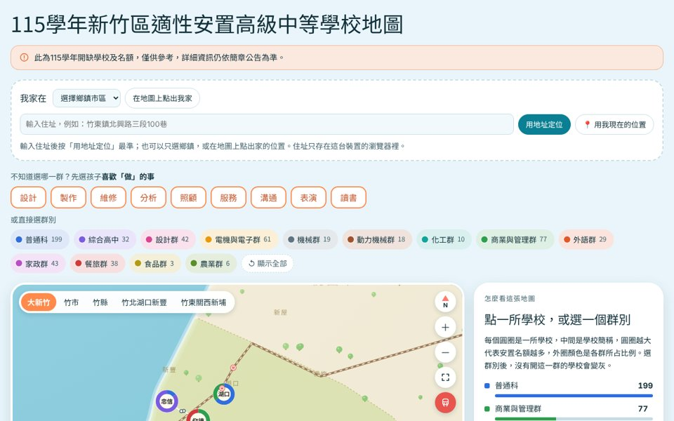
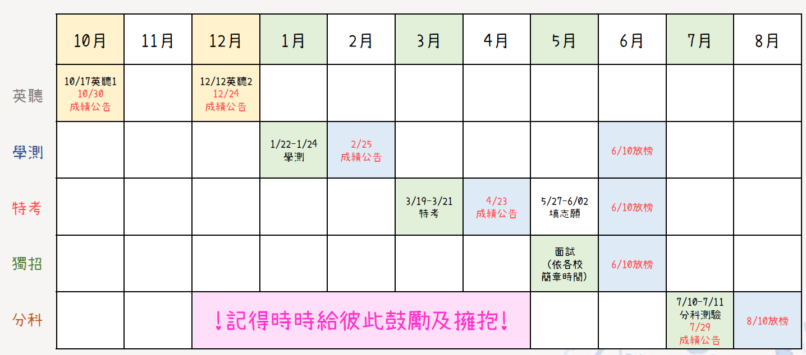

happy-teacher.github.io/highschool/links從「管道說明」到「學校地圖」，再到高中三問
免試、適性輔導安置、各種期程與表件，簡章厚、名詞多，不知道孩子該走哪一條。
→ 適性輔導安置說明：管道與期程
名額表只有校名，家長很難想像通勤距離，也不知道同一區有哪些選擇。
→ 安置學校地圖：位置與距離
「資料處理」和「商業經營」差在哪？孩子喜歡做菜就一定適合餐旅嗎？
→ 群科小百科＋晤談提問
用 Google 協作平台，把升學管道、期程、表件與問答整理在同一個網站，給家長隨時查。
免試入學，與一般生相同的入學方式。
依安置簡章，由鑑輔會安置到高級中等學校。
網站五個頁面
和一般生走同一套制度，另有身障外加名額
依安置簡章，由鑑輔會安置
新竹縣市屬於竹苗區，用竹苗區的比序項目與志願表。
國中三年的服務、獎勵、出缺勤、日常表現，加上會考，都算進「原始積分」。
和一般生用同一套志願表，身障生另享外加名額與第二輪比序。
「免試」不是不用考會考：會考仍是比序項目之一，只是不再用單一考試分數決定。
孩子和所有一般生使用同一套志願表，參與統一分發。
這讓孩子在同一個志願，擁有 兩次比序 的機會。
依據：《身心障礙學生升學輔導辦法》第 3 條
簡章名額表怎麼看？（114學年度竹苗區簡章節錄）
| 學校・科別 | 招生名額 | 身障外加 |
|---|---|---|
| 國立竹東高中・普通科 | 438 | 9 |
| 國立竹北高中・普通科 | 475 | 11 |
| 私立忠信高中・綜合高中 | 382 | 8 |
| 國立關西高中・綜合高中 | 85 | 1 |
表格最右側「外加名額」欄分「身心障礙生」與「原住民生」，各有「各科名額」與全校「總計名額」。
| 比序項目 | 上限 | 積分採計標準 | |
|---|---|---|---|
| 均衡發展 | 扶助弱勢 | 5 分 | 偏遠鄉鎮國中學生、經濟弱勢（中低、低收入戶），符合其一即 5 分 |
| 就近入學 | 5 分 | 竹苗區（共同就學區、變更就學區）5 分 | |
| 志願序位 | 20 分 | 第1–5志願10分、6–10志願7分、11–15志願5分、16–20志願3分、21–25志願1分 | |
| 多元學習表現 | 日常生活表現 | 10 分 | 功過相抵及銷過後無懲罰紀錄 10 分 |
| 無曠課紀錄 | 12 分 | 每學期無曠課紀錄 2 分，最多 12 分 | |
| 獎勵 | 20 分 | 大功 4.5 分、小功 1.5 分、嘉獎 0.5 分，最多 20 分 | |
| 服務學習 | 10 分 | 每學期服務滿 3 小時 1 分，每學期最多 2 分，5 學期最多 10 分 | |
| 本土語言 | 2 分 | 通過原住民族語、客語或閩南語初級以上 2 分 | |
| 會考 | 30 分 | 精熟每科 6 分、基礎每科 4 分、待加強每科 2 分 | |
| 總積分 | 100 分 | 第一輪和所有學生競爭時使用的「原始積分」，每一分都很關鍵 | |
同分比序順序：總積分 → 均衡發展 → 扶助弱勢 → 志願序 → 多元學習表現 → 會考總積分 → 會考等級標示…
所開缺學校
筆開缺科別
個名額

輸入住址按「用地址定位」最準；也可只選鄉鎮，或直接在地圖上點。
不知道選哪一群？先選孩子「喜歡做的事」，或直接用群別、區域篩選。
看該校開缺科別、名額，並連到學校官網看課程、設備與學生作品。
展開名額表看備註，例如「限男生」「限女生」，再對照簡章。
💡 小提醒：地圖上的學校位置是示意，實際校址與交通請以各校官網或 Google 地圖為準。
選一個案例・用地圖幫孩子找科別・上線分享心得
🎁 填寫回饋就能參加抽獎，抽出三位老師送太陽餅！
📍 湖口鄉中山路一段722號
放學就拆裝舊電腦，愛研究線路；不喜歡長時間抄寫。
📍 竹北市光明六路10號
週末會自己做便當給家人，喜歡被稱讚「好吃」。
📍 竹北市中華路343之7號
學科成績中上，想念大學，但寫作業速度很慢。
① 選案例、輸入地址定位 → ② 用群別篩選找答案 → ③ 填試用表單（自動批改＋心得）
提交表單後按「查看成績」，可以看到自己每題的對錯
接下來逐案公布正確答案，也聊聊在網站上卡住的地方
A1. 離小宇家最近的 3 所「電機與電子群」學校？（選 3 所）
💡 三所都在約 6–9 km；新竹高工、光復較遠。湖口高中沒有開電機與電子群。
A2. 喜歡組裝電腦、架網路、寫程式，最對應哪一科？
💡 資訊＝電腦硬體、網路與程式；電子＝電子電路與 PCB；電機＝配線、電力設備與控制。
A3. 內思高中資訊、電子、電機科各開幾名？
💡 三科各 3 名，名額少，要準備備案。
B1. 離阿哲家最近的餐旅群科別？
💡 光復約 3.7 km；仰德約 5.9 km；東泰、關西都在 15 km 以上。
B2. 光復高中餐飲管理科開幾名？
💡 光復高中餐飲管理科 14 名。
B3. 新竹區餐旅群名額最多的是哪一所？
💡 仰德 15 名最多，離阿哲家約 5.9 km，是第二近的選擇。
C1. 哪些學校的普通科，阿凱「不能」選？（可複選）
💡 新竹女中、曙光女中限女生；新竹高中限男生，阿凱可以選。看名額表「備註」欄。
C2. 離阿凱家最近的 2 所普通科？（選 2 所）
💡 兩校都在約 1 km；其次六家高中約 3 km。義民高中普通科只有 2 名。
名額為115學年新竹區名額表；距離為「用地址定位」後的離家直線距離，可能因定位結果略有差異。
最近的 3 所（約 6–9 km）：
新竹高工、光復較遠；湖口高中沒有電機與電子群。
餐飲管理科，由近到遠：
不能選：國立新竹女中、私立曙光女中（限女生）
最近的 2 所（約 1 km）：
其次：縣立六家高中｜18 名｜約 3 km
選一位孩子，用網站找答案作答；提交後可看每題對錯。
否／是？哪個功能最能幫到學生或家長？
針對網站有什麼建議，或希望網站再加什麼？
🎁 填完就能參加抽獎，三位老師送太陽餅！
把回覆試算表中「您的稱呼」那一欄複製貼上（一行一位）：
作業考試一樣嗎？每間都有資源班嗎？考大學有優惠嗎？
做我們能做的，
所有的安排都是最好的安排。
和一般生完全相同，沒有特教生的加分優惠；可申請特殊應考服務（依障礙狀況調整考試環境、時間或作答方式）。
身心障礙學生升學大專校院甄試，是特教生才有的升學管道。會對應障礙別和類組，額外考一個考試，大學組、四技二專組、二技組各有規定。
工具三・延伸：116學年度身障甄試 校系志願查詢（選障礙別 → 升學管道 → 類群組，查可選校系）
🔗happy-teacher.github.io/choose/開啟 ↗
英聽・學測・分科：與一般生同一套考試、同一套標準，可申請特殊應考服務。
特考：3 月考試、4 月公告成績、5/27–6/02 填志願、6/10 放榜。
我們看過的三種適應樣貌
選校不只看「考不考得上」，更要看孩子在那裡能不能待得住、學得下去。
網站僅供參考，所有資訊以當年度簡章公告為準。
今天介紹的兩個網站
網站資料有誤或有建議，歡迎用地圖網站下方的「告訴我」回報
happy-teacher.github.io/highschool/links